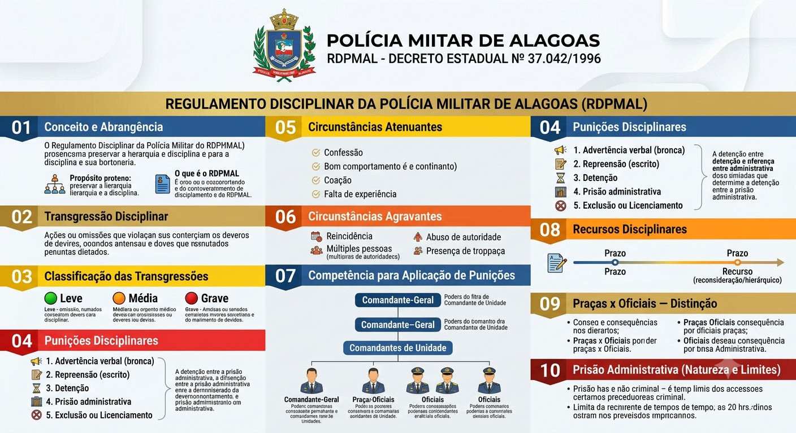
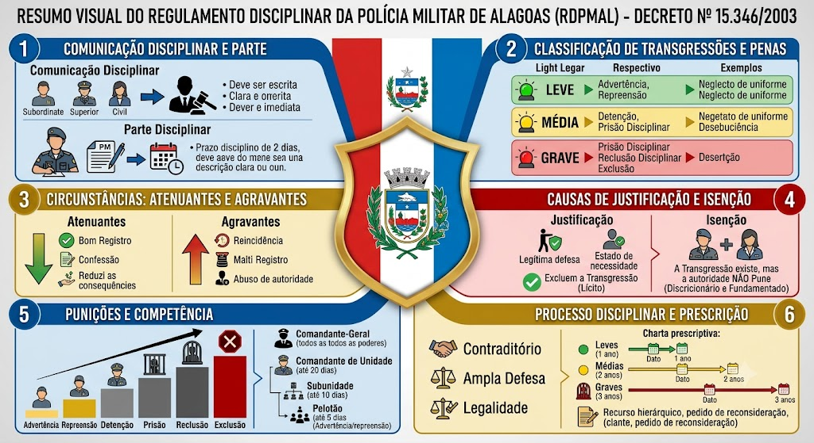

O que é o RDPMAL
O que é o RDPMAL
O Regulamento Disciplinar da Polícia Militar de Alagoas, instituído pelo Decreto Estadual nº 37.042/1996, é o código de conduta e de punições da Corporação. Estabelece as transgressões disciplinares (atos que violam deveres éticos, funcionais ou que causam desprestígio à PM) e as respectivas sanções, aplicáveis tanto em serviço quanto na folga. O objetivo é preservar a hierarquia e a disciplina, pilares da instituição militar.
Situação prática
Situação prática
Esquecer a farda completa numa instrução é transgressão média → advertência. Dormir em serviço armado é transgressão grave → pode gerar detenção ou prisão administrativa. Discutir com superior na frente de civis é transgressão gravíssima — lesa a hierarquia e a imagem da PM, podendo levar à exclusão da Corporação.
Definição
Definição
Transgressão disciplinar é toda ação ou omissão que viole os deveres éticos, profissionais ou funcionais do policial militar, ou que cause desprestígio à Corporação. Pode ser cometida em serviço ou fora dele, sendo apurada em procedimento administrativo disciplinar.
Graus de transgressão
Graus de transgressão
As transgressões são classificadas em três níveis, conforme a gravidade e a repercussão:
Espécies de penas
Espécies de penas
As punições previstas no RDPMAL, em ordem crescente de severidade, são:
Diferença entre detenção e prisão administrativa
Diferença entre detenção e prisão administrativa
A detenção é menos gravosa, não exige isolamento total e permite que o militar continue trabalhando normalmente. A prisão administrativa é mais severa, com isolamento e perda de folgas, sendo aplicada em transgressões graves.
Fatores que reduzem a pena
Fatores que reduzem a pena
O RDPMAL prevê atenuantes que podem diminuir a punição, tais como:
Fatores que aumentam a pena
Fatores que aumentam a pena
As agravantes previstas no regulamento incluem:
Autoridades competentes
Autoridades competentes
A aplicação das penas disciplinares obedece à hierarquia, conforme o posto/graduação do infrator e do julgador:
Prazo e procedimento
Prazo e procedimento
O policial militar que se julgar injustiçado pode recorrer da decisão disciplinar, observando-se:
Consequências diferenciadas
Consequências diferenciadas
O RDPMAL e a legislação correlata tratam de forma distinta as punições para Oficiais e Praças:
Características
Características
A prisão administrativa prevista no RDPMAL tem natureza estritamente disciplinar, distinta da prisão penal comum:
Mapa-mental
Comunicação Disciplinar e Parte Disciplinar
Comunicação Disciplinar e Parte Disciplinar
Comunicação Disciplinar
Instrumento pelo qual qualquer pessoa (subordinado, superior ou terceiro) leva ao conhecimento da autoridade competente a ocorrência de uma possível transgressão disciplinar. Características:
- Deve ser escrita, assinada e identificada (salvo anônima, se houver elementos mínimos para apuração);
- Deve conter relato claro, objetivo e circunstanciado dos fatos.
Regra: a autoridade que tomar conhecimento de uma transgressão tem o dever funcional de comunicar imediatamente à autoridade competente. A omissão também gera responsabilidade disciplinar.
Parte Disciplinar
Documento oficial elaborado por policial militar para comunicar formalmente uma transgressão disciplinar verificada durante o serviço. Deve conter:
- Descrição objetiva dos fatos;
- Linguagem clara e precisa;
- Circunstâncias da ocorrência.
Prazo: deve ser encaminhada em até 2 (dois) dias úteis, salvo previsão diversa. Quem presencia e deixa de elaborar a parte também pode responder disciplinarmente.
Conceito de transgressão
Conceito de transgressão
Transgressão disciplinar é toda ação ou omissão contrária aos deveres militares, às obrigações funcionais, às normas disciplinares ou aos regulamentos da Corporação. Uma mesma conduta pode configurar transgressão disciplinar, infração administrativa, contravenção penal ou crime, sendo as responsabilidades independentes e cumuláveis.
Critérios de classificação
Critérios de classificação
A classificação leva em conta a natureza da infração, as circunstâncias, os antecedentes do transgressor, a repercussão do ato e o prejuízo causado à instituição.
Atenuantes — fatores que reduzem a pena
Atenuantes — fatores que reduzem a pena
São circunstâncias que diminuem a gravidade da infração e podem reduzir a punição aplicada:
- Bons antecedentes;
- Confissão espontânea;
- Procurar reduzir ou evitar as consequências;
- Agir de boa-fé;
- Coação irresistível;
- Estrito cumprimento do dever;
- Falta de prática no serviço (inexperiência funcional) — especialmente para recém-incorporados;
- Relevante valor moral ou profissional.
Agravantes — fatores que aumentam a pena
Agravantes — fatores que aumentam a pena
São circunstâncias que elevam a gravidade da infração e podem aumentar a punição:
- Reincidência;
- Maus antecedentes;
- Dolo ou má-fé;
- Abuso de autoridade ou de confiança;
- Aproveitamento da fragilidade da vítima;
- Obtenção de vantagem;
- Motivo torpe ou fútil.
Causas de justificação (excluem a transgressão)
Causas de justificação (excluem a transgressão)
Quando presentes, o ato é lícito e não há transgressão disciplinar:
- Legítima defesa (própria ou de terceiro);
- Estado de necessidade;
- Estrito cumprimento do dever legal;
- Exercício regular de direito;
- Coação moral irresistível;
- Obediência à ordem legal de autoridade competente.
Isenção de punição (discricionária, fundamentada)
Isenção de punição (discricionária, fundamentada)
A autoridade poderá deixar de aplicar a punição quando:
- A infração for de pequena gravidade;
- O militar possuir bons antecedentes;
- As circunstâncias demonstrarem reduzida reprovabilidade;
- Houver recomendação de benevolência.
É um ato discricionário, mas deve ser sempre fundamentado.
Diferença que a banca cobra
Diferença que a banca cobra
📌 Justificação → exclui a transgressão (fato lícito).
📌 Isenção → a transgressão existe, mas a autoridade decide não punir (discricionariedade motivada).
Ordem crescente das punições
Ordem crescente das punições
1. Advertência;
2. Repreensão;
3. Detenção;
4. Prisão disciplinar;
5. Reclusão disciplinar;
6. Exclusão do serviço ativo (medida extrema, aplicada nos casos mais graves).
Competência para aplicar punições
Competência para aplicar punições
- Comandante-Geral: todas as punições, inclusive exclusão;
- Comandante de Unidade: até 20 dias de prisão administrativa;
- Comandante de Subunidade: até 10 dias;
- Comandante de Pelotão: até 5 dias (advertência e repreensão).
Aplicação da punição
Aplicação da punição
A autoridade competente analisa:
- Gravidade da infração;
- Circunstâncias agravantes e atenuantes;
- Antecedentes do militar;
- Consequências do ato.
Princípio: a pena é pessoal — nunca poderá ser aplicada a terceiros.
Princípios do processo disciplinar
Princípios do processo disciplinar
O processo disciplinar deve observar:
- Legalidade;
- Tipicidade;
- Contraditório e ampla defesa;
- Razoabilidade e proporcionalidade;
- Verdade real;
- Publicidade dos atos (quando cabível);
- Atuação oficial da Administração.
Prescrição da pretensão punitiva disciplinar
Prescrição da pretensão punitiva disciplinar
O prazo prescricional começa da data do fato ou da cessação da permanência:
- 1 ano para transgressões leves;
- 2 anos para transgressões médias;
- 3 anos para transgressões graves.
A instauração do processo disciplinar ou a notificação do militar interrompe a prescrição.
Recursos disciplinares
Recursos disciplinares
Cabem recursos contra decisões disciplinares:
- Recurso hierárquico (à autoridade imediatamente superior);
- Recurso ao Conselho de Disciplina (quando cabível);
- Pedido de reconsideração.
O efeito suspensivo somente existe quando previsto expressamente no RDPMAL.
Classificação disciplinar (comportamento)
Classificação disciplinar (comportamento)
Todo policial militar possui classificação disciplinar:
- Excepcional – acima da média;
- Bom – dentro da média;
- Mau – abaixo da média.
O comportamento influencia promoções, licenças, cursos, designações, funções, agregações e outras situações administrativas.
Recompensas
Recompensas
Reconhecimentos pelos bons serviços prestados, podendo consistir em:
- Elogio;
- Louvor;
- Medalhas;
- Menção honrosa;
- Dispensa do serviço (usufruída integral ou parcialmente).
Todas devem ser registradas no assentamento individual do militar.
Ausente, Desertor, Desaparecido e Extraviado
Ausente, Desertor, Desaparecido e Extraviado
Ausente: afasta-se do serviço ou da sede sem autorização dentro do prazo legal (início da contagem).
Desertor: ausência injustificada que ultrapassa o prazo legal (ex.: 8 dias consecutivos).
- Sem estabilidade: exclusão direta;
- Com estabilidade: agregado por até 6 meses; após, exclusão.
Desaparecido: paradeiro desconhecido, sem confirmação de deserção (aguardam-se informações).
Extraviado: após cerca de 30 dias desaparecido, passa a essa situação administrativa.
Exemplo prático (CEBRASPE)
Exemplo prático (CEBRASPE)
O militar deveria assumir o serviço em 21/07 às 07h. No dia seguinte (22/07 às 07h01) já é considerado ausente. Após 8 dias consecutivos de ausência, passa à condição de desertor. Deserção é crime militar (art. 187 do CPM).
Investigação Preliminar, Sindicância e PADS
Investigação Preliminar, Sindicância e PADS
Quando ocorre uma infração, a Administração deve investigar os fatos:
- Investigação Preliminar: fase inicial, célere, para verificar indícios de irregularidade;
- Sindicância: investigação mais completa, apura fatos e responsabilidades, podendo culminar em penalidade;
- PADS (Processo Administrativo Disciplinar Simplificado): rito utilizado para aplicar sanções, garantindo contraditório e ampla defesa. É usado para infrações que não exigem processo comum mais complexo.
A escolha do procedimento depende da gravidade da infração e da necessidade de apuração aprofundada.
Licenciamento das praças
Licenciamento das praças
A gravidade da violação dos deveres e das obrigações militares pode ensejar o licenciamento das praças, conforme previsto na legislação disciplinar, especialmente quando o militar demonstra incompatibilidade com a vida militar.
Decreto AL 37.042/1996 — Regulamento Disciplinar da PMAL
AL / 2026-10-26 / Documento oficial em PDF
Consultar fonte oficial Baixar cópia local
A redação desta cópia corresponde à versão identificada acima. Consulte a fonte oficial para conferir alterações posteriores e o recorte do seu edital.
Roteiro de leitura
- Hierarquia, disciplina e competência
- Transgressões e julgamento
- Defesa e recursos
- Comportamento e recompensas
Documento oficial em PDF
Material de estudo: Dc-Estadual nº 37.042/1996 — Regulamento Disciplinar da Polícia Militar de Alagoas (RDPMAL)
Material complementar · Ver fonte no GitHub
Classificação das Transgressões
Graus de transgressão
As transgressões são classificadas em três níveis, conforme a gravidade e a repercussão:
- 🟡 Leve — menor impacto disciplinar, geralmente punida com advertência ou repreensão;
- 🟠 Média — impacto intermediário, pode resultar em detenção ou prisão administrativa curta;
- 🔴 Grave — maior repercussão, podendo gerar punições severas, como prisão administrativa prolongada, exclusão ou licenciamento a bem da disciplina.
Punições Disciplinares (ordem crescente)
Espécies de penas
As punições previstas no RDPMAL, em ordem crescente de severidade, são:
- 1. Advertência verbal: bronca oficial, aplicada em particular, sem registro em assentamentos;
- 2. Repreensão: registro escrito da falta nos assentamentos funcionais;
- 3. Detenção: o militar permanece em local apropriado, mesmo fora do expediente, sem prejuízo do serviço (normalmente de 1 a 10 dias);
- 4. Prisão administrativa: isolamento em local apropriado, podendo perder folgas e ter restrições de comunicação (de 1 a 30 dias, conforme a gravidade);
- 5. Exclusão ou Licenciamento: para Praças sem estabilidade (comportamento classificado como "mau") ou expulsão de Oficiais, mediante processo administrativo disciplinar.
Circunstâncias Atenuantes
Fatores que reduzem a pena
O RDPMAL prevê atenuantes que podem diminuir a punição, tais como:
- Confissão espontânea da transgressão;
- Bom comportamento anterior e relevantes serviços prestados;
- Ter cometido a falta sob coação ou em defesa de direito próprio ou de outrem;
- Falta de prática no serviço (para recém-incorporados);
- Baixo grau de instrução ou de compreensão do dever violado.
Circunstâncias Agravantes
Fatores que aumentam a pena
As agravantes previstas no regulamento incluem:
- Reincidência específica (nova transgressão no prazo de 1 ano);
- Concurso de duas ou mais pessoas para a prática da falta;
- Abuso de autoridade hierárquica ou funcional sobre subordinado;
- Prática da falta em presença de tropa, público ou local de grande circulação;
- Ação premeditada;
- Prática da transgressão durante execução de serviço de policiamento ostensivo;
- Dano à imagem da Corporação ou à fé pública.
Competência para Aplicação de Punições
Autoridades competentes
A aplicação das penas disciplinares obedece à hierarquia, conforme o posto/graduação do infrator e do julgador:
- Comandante-Geral da PMAL: competente para aplicar todas as punições previstas, incluindo a exclusão ou licenciamento a bem da disciplina;
- Comandantes de Unidade (Coronéis ou Tenentes-Coronéis): podem aplicar advertência, repreensão, detenção e prisão administrativa;
- Oficiais Subalternos e Intermediários (Tenentes e Capitães): limitam-se às punições de menor gravidade (advertência, repreensão e detenção de curta duração), conforme delegação interna.
Recursos Disciplinares
Prazo e procedimento
O policial militar que se julgar injustiçado pode recorrer da decisão disciplinar, observando-se:
- Prazo: contado da ciência da punição ou da publicação em boletim interno (geralmente 5 dias úteis);
- Recurso: pedido de reconsideração (endereçado à autoridade que aplicou a pena) ou recurso hierárquico (para autoridade superior);
- Efeito: o recurso, em regra, não suspende a execução da pena, salvo decisão fundamentada em contrário.
Praças x Oficiais — Distinção
Consequências diferenciadas
O RDPMAL e a legislação correlata tratam de forma distinta as punições para Oficiais e Praças:
- Para Oficiais: a punição mais grave é a perda do posto e patente, mediante processo judicial militar (Conselho de Justificação) ou administrativo, com ampla defesa;
- Para Praças: a exclusão ou licenciamento a bem da disciplina pode ser aplicada por ato do Comandante-Geral, após processo administrativo disciplinar, especialmente para praças sem estabilidade (menos de 10 anos de serviço).
- Praças estáveis (mais de 10 anos): a exclusão depende de decisão em Conselho de Disciplina, com direito à ampla defesa.
Prisão Administrativa (Natureza e Limites)
Características
A prisão administrativa prevista no RDPMAL tem natureza estritamente disciplinar, distinta da prisão penal comum:
- Finalidade de preservar a ordem interna e a disciplina, não sendo pena criminal;
- Não gera reincidência penal nem maus antecedentes criminais;
- Duração máxima prevista no regulamento (em regra, até 30 dias, salvo disposição especial);
- Deve ser aplicada com observância dos princípios do contraditório e da ampla defesa, ainda que de forma sumária.
Dc-Estadual nº 37.042/1996 — Imagem
Mapa-mental

Dc-Estadual nº 15.346/2003 — Regulamento Disciplinar da Polícia Militar de Alagoas (RDPMAL)
Diferença essencial (pegadinha da banca)
| Critério | Parte Disciplinar | Comunicação Disciplinar |
|---|---|---|
| Quem elabora | Superior hierárquico | Subordinado ou qualquer pessoa |
| Destinatário | Autoridade competente (para registrar infração de subordinado) | Autoridade competente (para comunicar infração de superior) |
| Fluxo | Superior → Subordinado (registro da falta) | Subordinado → Superior (denúncia contra superior) |
| Prazo | 2 dias úteis | 2 dias úteis |
Transgressão Disciplinar — Classificação
Classificação por gravidade
| Natureza | Penas Possíveis | Exemplos |
|---|---|---|
| Leve | Advertência, Repreensão | Descuido no uniforme, pequeno atraso sem justificativa, falta de atenção em formatura. |
| Média | Detenção, Prisão disciplinar | Desobediência a ordem verbal sem grave prejuízo, uso indevido de viatura. |
| Grave | Prisão disciplinar, Reclusão disciplinar, Exclusão do serviço ativo | Deserção, embriaguez em serviço, corrupção, desacato a superior, prática de crime doloso. |
Licenciamento e Gravidade da Violação
Mapa-mental
